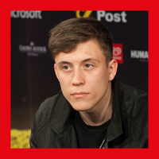

Loïc Nottet

Loïc Nottet is a Belgian singer, songwriter and dancer. He began his career as a singer in the third season of The Voice Belgique in 2014 and represented Belgium in the Eurovision Song Contest 2015 which was held in Vienna, Austria, where he placed fourth with his original song "Rhythm Inside". After his competition, he released "Million Eyes", the first single from his debut album Selfocracy, which later topped the charts in Belgium, reached number eight in France and number twenty in Switzerland. His second studio album Sillygomania was released on 29 May 2020.
In BSP 2020 he presents the song 'Million Eyes' submitted by Kostia.